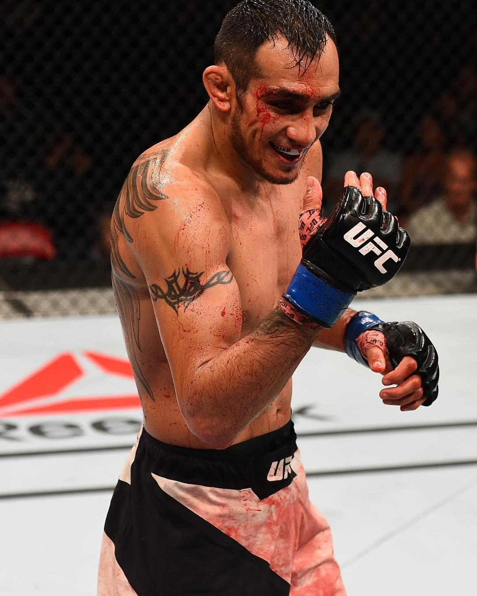

| Result | Fighter | Event | Method/Referee | R | Time |
|---|---|---|---|---|---|
| LOSS | Justin Gathje | UFC 249 | TKO(punch)/Herb Dean | 5 | 3:39 |
| WIN | Donald Ceronne | UFC 238 | TKO(doctor stappage)/Dan Miragliotta | 2 | 5:00 |
| WIN | Anthony Pettis | UFC 229 | Submision(triangle choke)/Herb Dean | 2 | 5:00 |
| WIN | Kevin Lee | UFC 216 | Submision(triangle choke)/Herb Dean | 3 | 4:02 |
| WIN | Rafael dos Anjos | UFC F.N.98 | Decision (Unanimous)/Herb Dean | 2 | 2:22 |
| WIN | Lando Vannata | UFC F.N.91 | Submission (Brabo Choke)/John McCarthy | 5 | 3:30 |
| WIN | Edson Barboza | TUF 22 | Submission (Brabo Choke)/John McCarthy | 2 | 2:54 |
| WIN | Josh Thomson | UFC F.N.71 | Decision (Unanimous)/Herb Dean | 3 | 5:00 |
Anthony Armand Ferguson Padilla (born February 12, 1984) is American professional mixed martial artist who competes in the lightweight division of the Ultimate Fighting Championship (UFC). He is a former interim UFC Lightweight Champion. A professional MMA competitor since 2008, Ferguson has been with the UFC since he won The Ultimate Fighter 13. In addition to his wrestling background, Ferguson has also trained boxing, jiu-jitsu, muay thai, and wing chun. As June 30, 2020 he is #11 in the UFC men's pound-for-pound rankings and #3 in the UFC lightweight rankings.
Ferguson began his professional MMA career fighting in small organizations around California in 2007. Notable matches in his early career include a win over kickboxing champion Joe Schilling and a loss to future WEC fighter Karen Darabedyan.
The Ultimate Fighter Ferguson applied to compete in the UFC's reality series The Ultimate Fighter multiple times. In 2010, he was finally accepted to compete in season 13 of the series after amassing a 10-2 professional record and winning the welterweight championship in PureCombat. He competed as a welterweight on The Ultimate Fighter: Team Lesnar vs. Team dos Santos. Ferguson was selected as the third pick for Team Lesnar. In his first fight, Ferguson defeated Justin Edwards by knockout in the first round. He next faced Ryan McGillivray in the quarterfinals and won by a TKO in the first round. He then faced Chuck O'Neil in the semifinals and won by TKO in the third round to advance to the final.